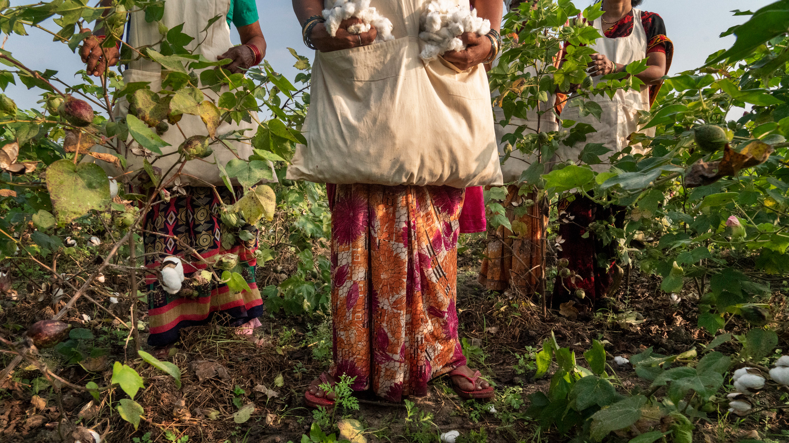
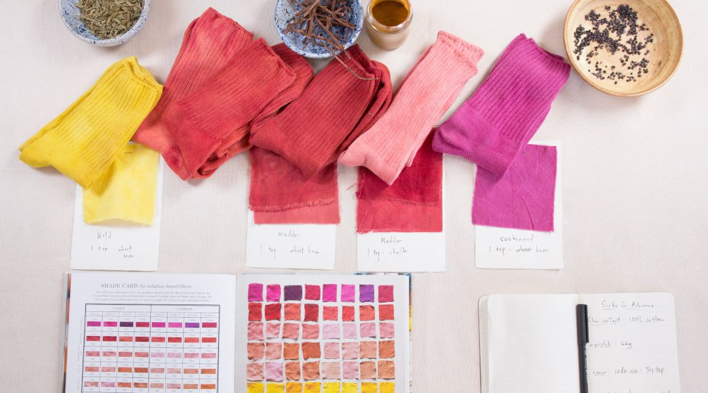
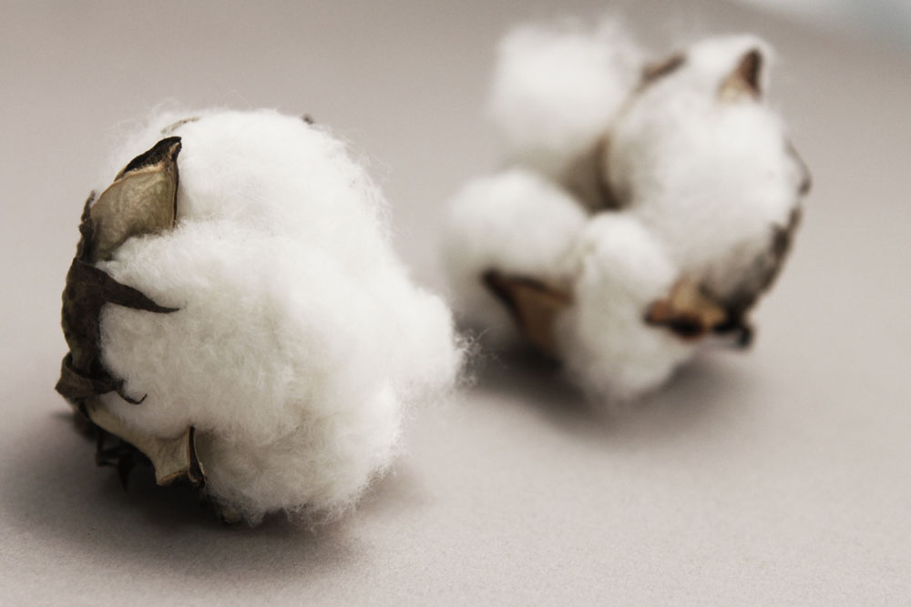

In "The Great Cotton Experiment," Patagonia takes readers on a journey into the world of sustainable cotton farming. The article narrates Patagonia's innovative approach to cotton cultivation, focusing on regenerative agriculture techniques aimed at improving soil health, biodiversity, and water conservation. It discusses the challenges and complexities of conventional cotton farming, such as heavy reliance on pesticides, water scarcity issues, and soil degradation, and contrasts them with the sustainable practices embraced by Patagonia. Through engaging storytelling and firsthand accounts from farmers, scientists, and environmental experts, the article showcases the potential of regenerative cotton farming to mitigate environmental impacts and promote social responsibility in the fashion industry
"10 Examples of Natural Dyes for Vibrant and Sustainable Fabric Colors" explores the fascinating world of natural dyes and their role in creating vibrant and sustainable colors for fabrics. The article provides an insightful overview of various natural dye sources, including plants, minerals, and insects, and their unique properties for dyeing textiles. It highlights ten specific examples of natural dyes, each accompanied by detailed information on its origin, extraction process, color properties, and environmental benefits. Through engaging narratives and visual examples, the article shows the beauty and versatility of natural dyes in producing a wide range of hues, from earthy tones to vivid shades, while also emphasizing their eco-friendly and non-toxic characteristics compared to synthetic dyes. Whether you're a textile enthusiast, a sustainable fashion advocate, or simply curious about the art of natural dyeing, this article serves as a valuable resource for understanding the sustainable potential of natural dyes and their significance in promoting environmentally conscious practices in the textile industry.
In this article, the integration of machine learning techniques with sustainable practices in circular economy systems is explored. Through the lens of circularity, where resources are reused, recycled, and regenerated, the study investigates how machine learning can optimize resource flows, enhance product lifecycle management, and minimize environmental impacts. By analyzing extensive datasets and identifying patterns, machine learning algorithms offer insights into designing and optimizing circular economy systems. Through the examination of case studies and theoretical frameworks, this article illustrates the transformative potential of machine learning in advancing sustainable and resilient circular economy models. Additionally, it discusses challenges, opportunities, and future directions in the application of machine learning for designing and optimizing circular economy systems.
